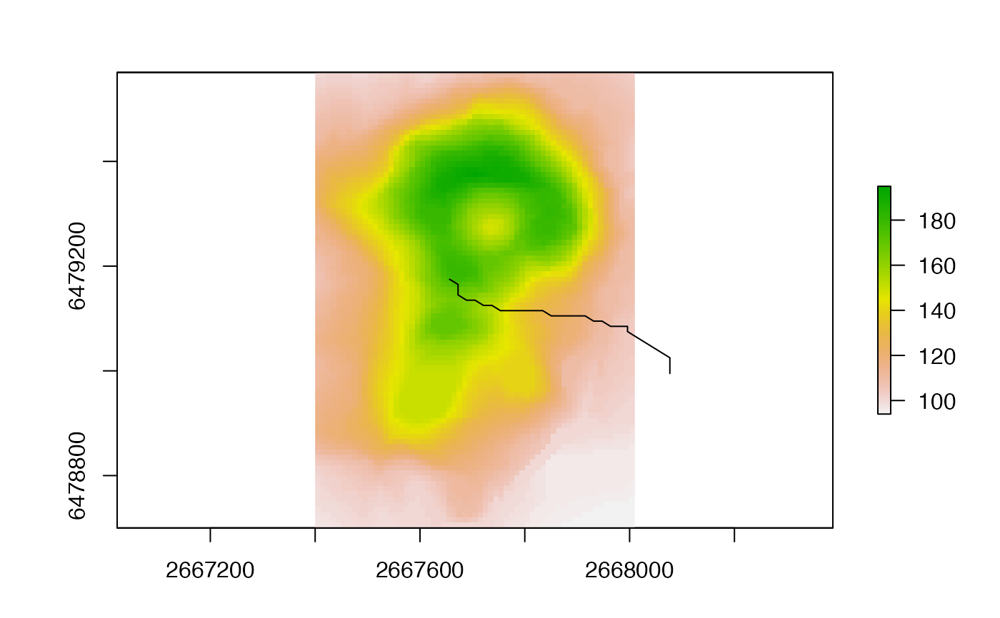

flowpath.RdCompute the flow path (drainage path) starting at a given point. See package gdistance for more path computations.
flowPath(x, p, ...)
| x | RasterLayer of flow direction (as can be created with |
|---|---|
| p | starting point. Either two numbers: x (longitude) and y (latitude) coordinates; or a single cell number |
| ... | additional arguments (none implemented) |
numeric (cell numbers)
Ashton Shortridge
data(volcano) v <- raster(volcano, xmn=2667400, xmx=2668010, ymn=6478700, ymx=6479570, crs="+init=epsg:27200") fd <- terrain(v, opt = "flowdir") path <- flowPath(fd, 2407) xy <- xyFromCell(fd, path) plot(v) lines(xy) 